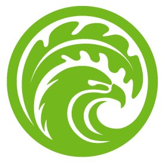
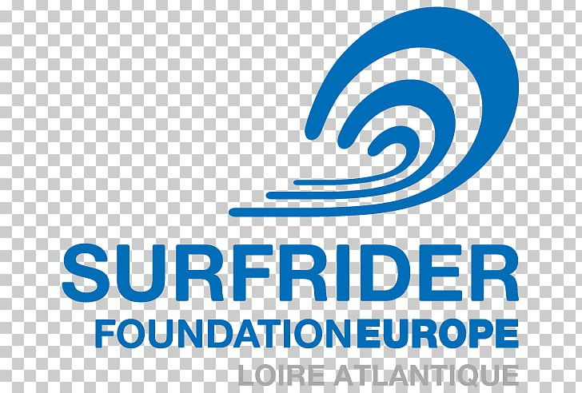
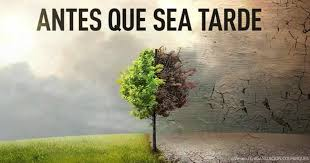
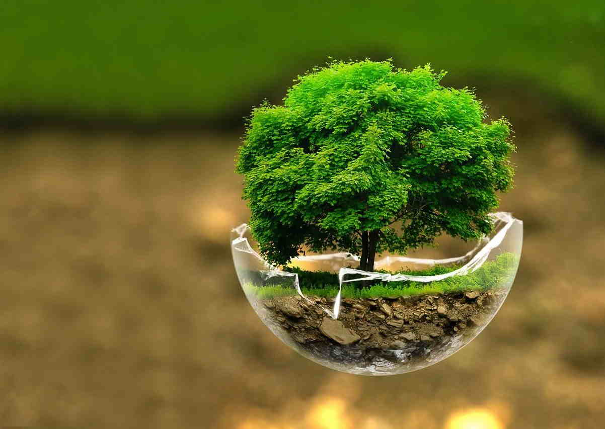

|
||
| GRUPOS SOCIALES/ORGANIZACIONES | ||
| Organización: Centro Mexicano de Derecho Ambiental (CEMDA): | Formada por un grupo de abogados que hace investigaciones sobre medio ambiente, documenta agresiones contra los ecologistas y hace pronunciamientos, dirigidos mayormente al gobierno, para la mejora y correcta aplicación de las normas ambientales. También aplica acciones concretas en ecosistemas amenazados y monitorea sitios con alerta ecológica.. |
 |
| Organización: Fondo Mexicano para la Conservación de la Naturaleza | Tiene programas y proyectos para la conservación de áreas protegidas, bosques, cuencas, mares y costas. También financia algunos programas sustentables y hace convocatorias para costear proyectos de terceros, relativos al medio ambiente. |
 |
| Campaña: Holidays Are Over Surfrider Foundation | Esta campaña invita a limpiar la basura que los turistas dejan en las playas cuando se van de vacaciones. |  |
| Organización: Greenpeace México | esta asociación internacional es quizá la más popular del mundo. Además de hacer un creativo activismo, es un fuerte crítico de las políticas gubernamentales antiecológicas. Aunado a ello, hace un monitoreo de omisiones al medio ambiente en este país, como los derrames diarios de petróleo. |
|
|  |  | |
Volver |
Siguiente |